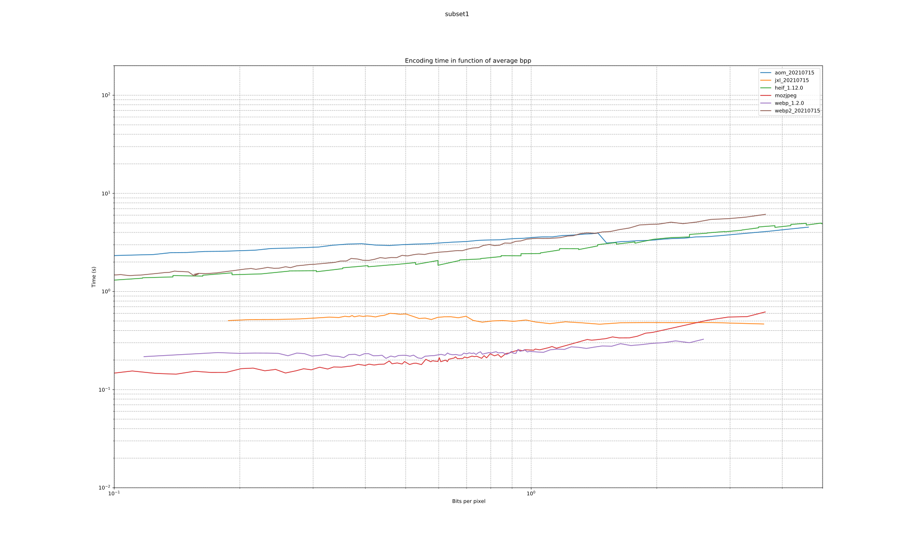

| format | avg_bpp | avg_compression_ratio | avg_space_saving | wavg_encode_time | wavg_decode_time | weissman_score |
|---|---|---|---|---|---|---|
| jxl_20210715 | 10.10 | 1.3002 | 0.23088 | 6.304 | 0.6146 | 1.2156 |
| webp2_20210715 | 10.27 | 1.2789 | 0.21807 | 5.597 | 1.2677 | 1.2122 |
| jxl_0.3.7 | 10.10 | 1.3002 | 0.23088 | 6.830 | 0.6715 | 1.2046 |
| webp_1.2.0 | 10.51 | 1.2494 | 0.19963 | 16.515 | 0.8430 | 1.0523 |
| webp2_20201204 | 10.40 | 1.2627 | 0.20805 | 18.693 | 1.3003 | 1.0501 |
| mozjpeg | 13.96 | 0.9405 | -0.06330 | 2.193 | 0.1159 | 1.0000 |
| heif_1.12.0 | 13.77 | 0.9535 | -0.04878 | 2.864 | 0.9807 | 0.9799 |
| aom_20210715 | 11.66 | 1.1263 | 0.11215 | 82.824 | 0.8738 | 0.8136 |
| aom_3.1.1 | 11.66 | 1.1262 | 0.11209 | 101.404 | 0.8856 | 0.7992 |
